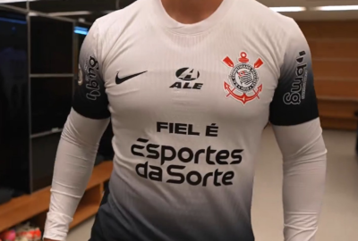
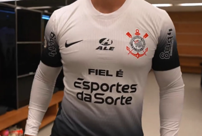

Sejam bem-vindos corinthianos(a): Sobre corinthians, inesperados e atualizados, noticias, elenco, loja, curiosidades, transferências, marketing, títulos, campeonatos e muito mais...normalizando críticas referente ao site e sua opinião, sobre todos e diversos conteúdos da página, especializando cada dia mais nos conteúdos produtivos em prol do corinthians.
Rodrigo Garro vive grande Augusto Melo segue no merc- Novo Patrocinador master
momento e gera grande expec- ado buscando peças para refo- do Corinthians, fecha aco-
tativa na temporada! rçar o elenco! rdo nesta Quinta-feira!
Hugo Souza - 1
Matheus Donelli - 32
Felipe Longo - 40
Fagner - 23
Matheuzinho - 2
Léo maná - 35
Diego Palacios - 6 🚑
Hugo - 46
Mateus Bidu - 21
André Ramalho - 5
Cacá - 25
Caetano - 4
Félix Torres - 3
Gustavo Henrique - 13
José Martinez - 70
Alex Santana - 80
Breno Bidon - 27
Charles - 8
Maycon - 7 🚑
Raniele - 14
Ryan - 37
Igor Coronado - 77
Mateus Araujo - 30
Rodrigo Garro - 10
André Carrillo - 19
Ruan Oliveira - 33 🚑
Hector Hernandez - 29
Giovane - 17
Pedro Henrique - 16
Pedro Raul - 18
Talles Magno - 43
Romero - 11
Memphis - 94
Yuri Alberto - 9
Confira todos os títulos do CORINTHIANS!
Confira todas as nossas peças de roupa e acessórios, na todo poderoso!
Clique aqui: VAI CORINTHIANS!